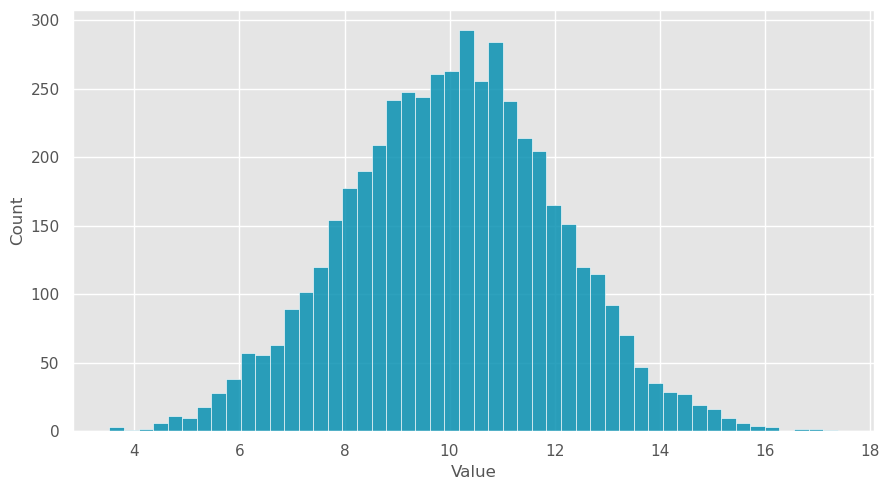
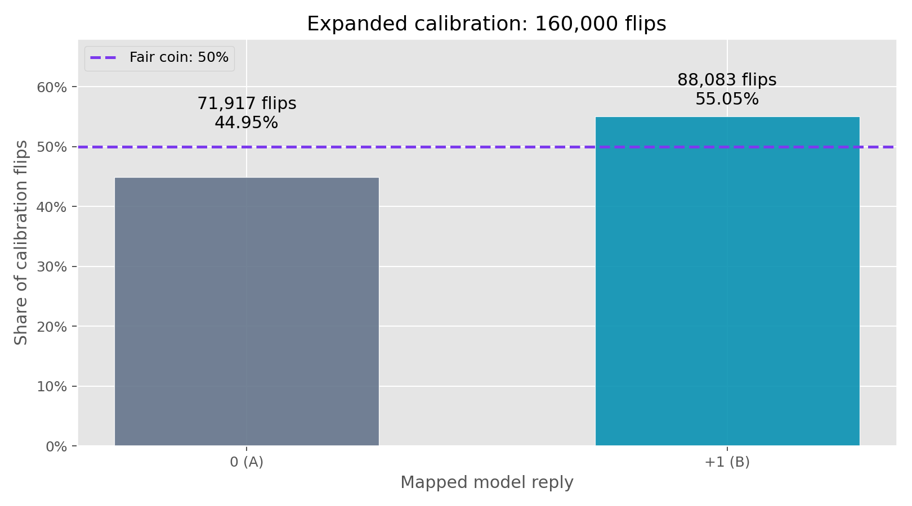
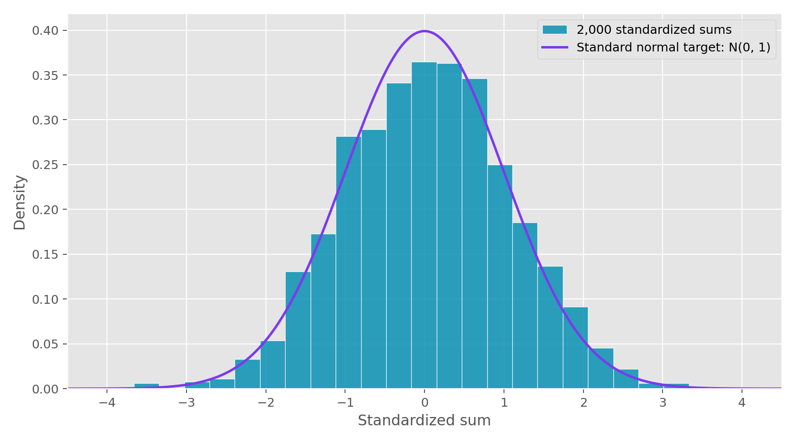
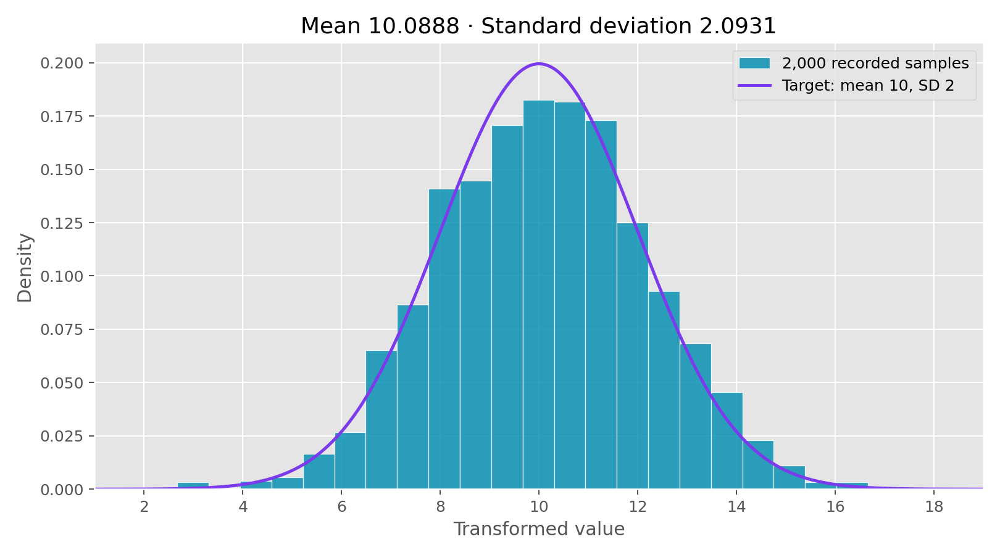
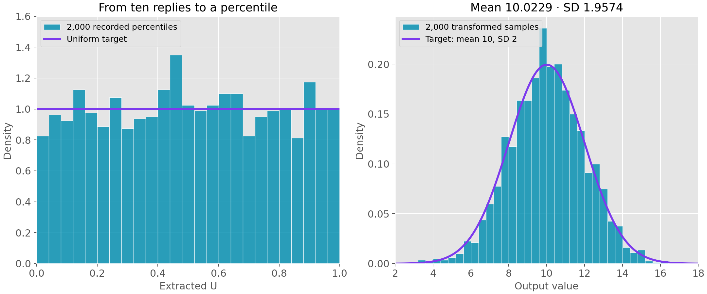

LLMs Failure Modes
Let's say I had a very simple request. I wanted to sample 2000 numbers from a normal distribution with mean 10 and standard deviation 2. i.e. we want
A one line solution to this might be
import numpy as np
np.random.normal(loc=10,scale=2,size=2000)
This gives us something reasonable looking:

However, now suppose we wanted to derive all randomness here from an LLM. It seems reasonable to assume that the underlying architectures that can solve Navier-Stokes can also sample from a normal distribution.
Let's say we fed this prompt to 2000 distinct LLM agents with no prior context/history:
Sample a number from the normal distribution N(10,2), where the mean is 10 and the standard deviation is 2. Respond only with the number and nothing else:
The resulting distribution is rather disappointing:

Why does this happen? The LLM attempts to predict reasonable responses but it's never generating true randomness. For instance, NumPy in any sort of random operation begins by running a pseudo-random number generator over 64 bits that can then be used to sample from a uniform distribution. Any number that is close to 10 seems somewhat reasonable here but there is no systematic process that understands that values above 14 should occur around 2.3% of the time. There is definitely a lot of meat on the bone here for further study, such as what small tweaks to the prompt could improve sampling or how altering temperature when sampling improves the distribution. It may be worthwhile to study these in future posts!
Now, instead of trying to sample from something complicated like a normal distribution, let's start by deriving some sort of randomness from a simple distribution. Let's try to generate a list of random variables
We are mostly at the mercy of model training, the specific prompt, and temperature when sampling as to what
Pick one at random: B or A. Respond with only the letter.
Now, we get something reasonable!

We map A to
CLT
Let's suppose our coin returns
Now, suppose we add up
So we don't need
From the above study we have already estimated
We freeze this estimate and now look to summing these random variables in fresh runs where we sum the resulting outputs. Some easy intuition here is that getting all

To generate the distribution we care about we can simply scale these sums viaThis gives us :

This is close to what we want but the slight difference in distribution can be attributed to experiencing a different
Let's shoot for another method that doesn't rely on so many LLM calls for calibration and can perhaps get a tighter match to the distribution we want.
Using order
Ultimately, the CLT method is assigning less probability to tail results of the sums and more probability near the mean case. Let's try to use this idea in some other manner.
Suppose three independent calls from the same distribution return three distinct numbers. Even if some numbers are much more likely than others, all six possible orderings are equally likely (all agents experience the odd distribution). For instance, conditional on getting the distinct values
Changing the positions of the values does not change that product. The same argument works for ten calls. Conditional on all ten answers being distinct, each of the
We need independence across position and nothing else for this argument to hold. Mainly, we don't need to worry about the distribution of the numbers themselves.
Turning an ordering into a percentile
For each group, we make ten (ten is arbitrary here) fresh calls with the prompt:
Choose an integer at random from 0 through 999999999. Respond with digits only, no explanation.
We assign positions before sending the calls and keep that order when replies return. We rank the answers. If any answers tie, or an answer is invalid, we discard the entire group.
To see how this works in a three agent case, imagine the answers were
Our outcome had likelihood
We basically see how close we are to the permutation that's only descending. Now turn this index into a uniform grid point:
The half-step places us at the center of each interval and avoids exactly 0 or 1. We have 3,628,800 equally likely possible values under our assumptions. We don't need to observe every value to sample from this grid.
From uniform to normal
Let
Thus,
For example,
This gave
This gives the following distribution:
